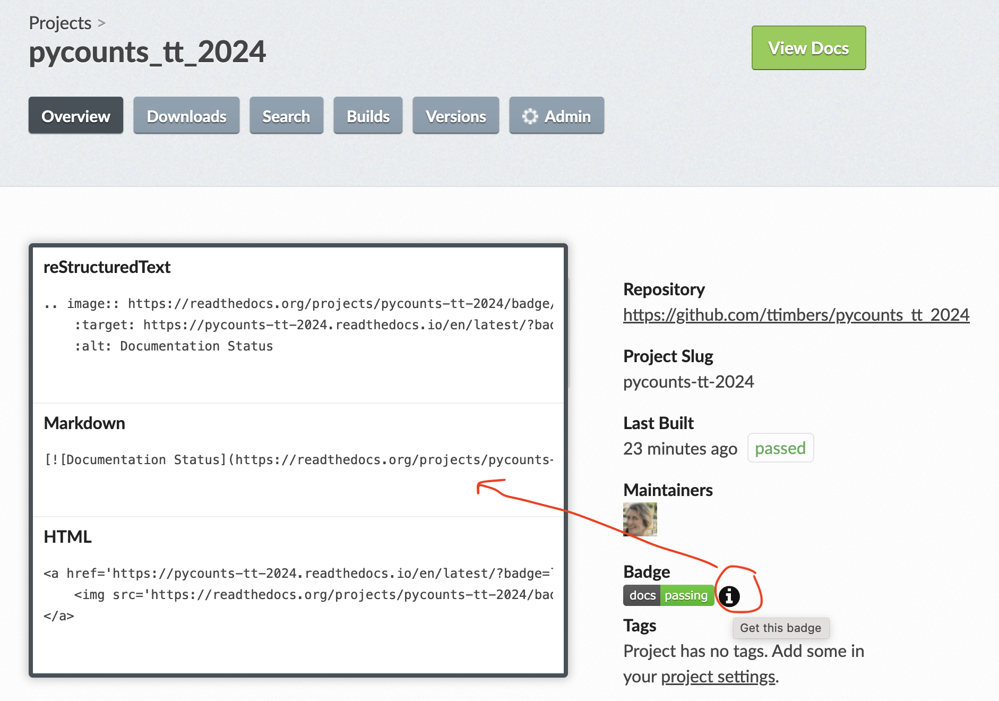

Milestone 3
Milestone 3 summary
In this milestone, you will:
Write and publish the package-level documentation
Continue to manage issues professionally
Resources to help you on your way:
1. Write and publish the package-level documentation
Your package-level documentation should be very clear and polished by the end of this milestone. It should include a vignette (i.e., an article/tutorial) demonstrating how to use all your package functions on a more real-life example than the examples in the function documentation. There should be clear and well written narrative to go along with the code examples in the vignette. Essentially, this documentations should enable any user with minimal expertise to be able to run your package functions and play around with them.
This documentation should be published to a website, using the tools most appropriate for the programming language you wrote your code in. For Python, all function documentation should be rendered using the napolean Sphinx extension and readable on ReadTheDocs. Your vignette should be a Jupyter notebook in the docs folder.
Here are some examples of good vignettes/tutorials:
Make sure you tell your users about the status of your docs and where they can view a rendered version! The easiest way to do this is to add the ReadtheDocs status button to your packages README.md file. You can find this under your project on ReadtheDocs by clicking the “i” icon beside the badge (see image below):
Quality expectations
Given this is the main focus of your package this week, we want to make it clear that we have very high expectations for the quality of your package documentation.
This means that we expect:
An extremely clear narrative demonstrating the use of all your package functions.
The demonstration should be on a rich/real-life example that is motivating yet understandable.
The grammar and spelling should be flawless.
2. Continue to manage issues professionally
Continue managing issues effectively through project boards and milestones, make it clear who is responsible for what and what project milestone each task is associated with. In particular, create an issue for each function in the package. Each of these issues must be assigned to a single person on the team. We want all of you to get coding experience in the project and each team member should be responsible for a package function. So if you are a team of four, you’ll be writing four functions for your package and if you are a team of three, you will be writing three functions for your package.
Submission Instructions
Just before you submit the milestone 3, create a release on your project repository on GitHub and name it exactly 1.1.0 (how to create a release). This release allows us and you to easily jump to the state of your repository at the time of submission for grading purposes, while you continue to work on your project for the next milestone.
You will submit a PDF to Gradescope for milestone 3 that includes:
- the URL of your project’s GitHub.com repository
- the URL of a GitHub release of your project’s project’s GitHub.com repository
Expectations
- Everyone should contribute equally to all aspects of the project (e.g., code, writing, project management). This should be evidenced by a roughly equal number of commits, pull request reviews and participation in communication via GitHub issues.
- After the repository is set-up, each group member should work in a GitHub flow workflow; where they create branches for each feature or fix, which are reviewed and critiqued by at least one other teammate before the the pull request is accepted.
- You should be committing to git and pushing to GitHub.com every time you work on this project.
- Git commit messages should be meaningful. These will be marked. It’s OK if one or two are less meaningful, but most should be.
- Use GitHub for project-related communication.
- Use GitHub issues to communicate with team mates (as opposed to email or Slack).
- Create project boards using GitHub and link tasks to issues.
- Create GitHub milestones to group related issues. In particular, make a milestone for this milestone called
milestone1and put all the relevant issues linked to it.
- Use proper grammar and full sentences throughout the project, especially in your
README.